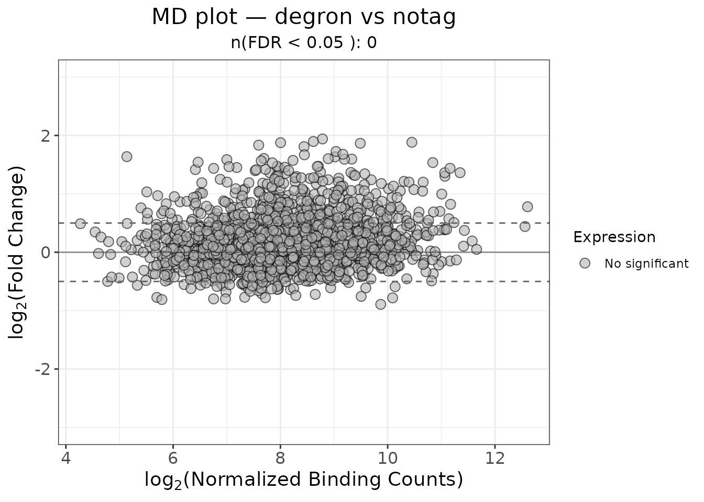
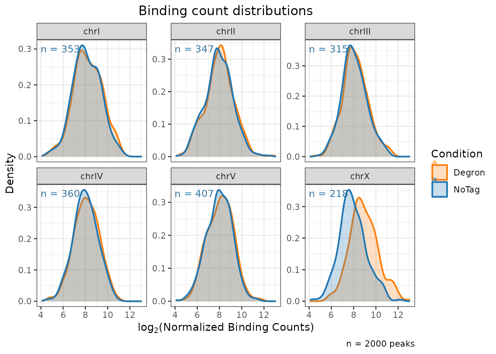
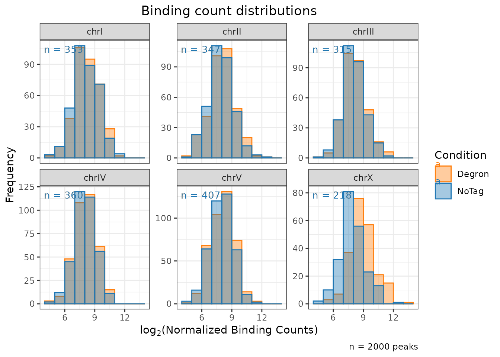
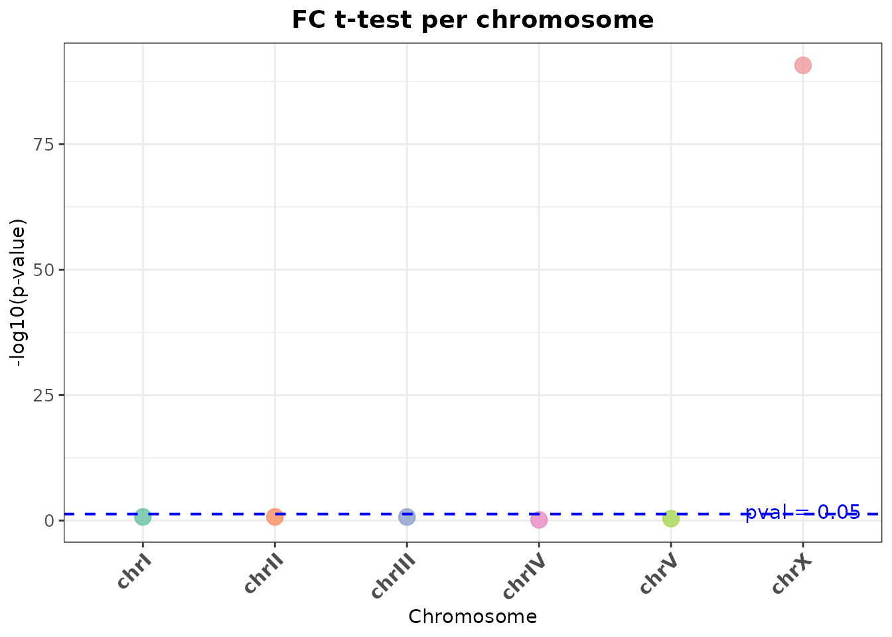

library(ercantools)
library(magrittr)
data(example_peaks)
plot_md()
Plots log2 fold-change against average concentration. Points are coloured by significance status.
plot_md(
object = example_peaks,
x_var = "Conc",
y_var = "Fold",
fdr_var = "FDR",
cutoff_y = 0.5,
cutoff_FDR = 0.05,
title = "MD plot — degron vs notag"
)
plot_distributions()
Density or histogram of normalized binding counts faceted by chromosome.
plot_distributions(
object = example_peaks,
title = "Binding count distributions",
condition = "Degron",
baseline = "NoTag",
type = "density"
)
plot_distributions(
object = example_peaks,
title = "Binding count distributions",
condition = "Degron",
baseline = "NoTag",
type = "hist"
)
ttest_scatter()
T-test comparing log2(fold-change) distribution of ChrA vs ChrA and ChrX vs ChrA.
res <- ttest_scatter(
object = example_peaks,
title = "FC t-test per chromosome",
fc_col = "Fold"
)
res$plot
The underlying data is also accessible:
res$results
#> Condition p_value chr_to_evaluate comparison_type mean_target
#> 1 chrI 1.888820e-01 chrI Autosome vs Autosomes 0.11456884
#> 2 chrII 1.860554e-01 chrII Autosome vs Autosomes 0.07455821
#> 3 chrIII 1.966083e-01 chrIII Autosome vs Autosomes 0.11629048
#> 4 chrIV 7.369995e-01 chrIV Autosome vs Autosomes 0.08977472
#> 5 chrV 4.148876e-01 chrV Autosome vs Autosomes 0.08367961
#> 6 chrX 1.963583e-91 chrX X vs Autosomes 0.99258303
#> mean_reference neg_log10_pvalue is_significant
#> 1 0.09018873 0.7238094 FALSE
#> 2 0.09996571 0.7303578 FALSE
#> 3 0.09045058 0.7063983 FALSE
#> 4 0.09634571 0.1325328 FALSE
#> 5 0.09837447 0.3820696 FALSE
#> 6 0.09501824 90.7069507 TRUE